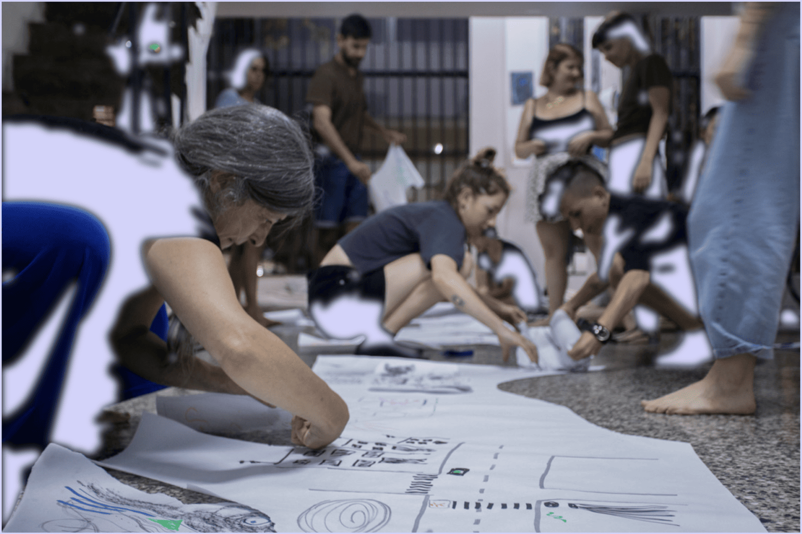
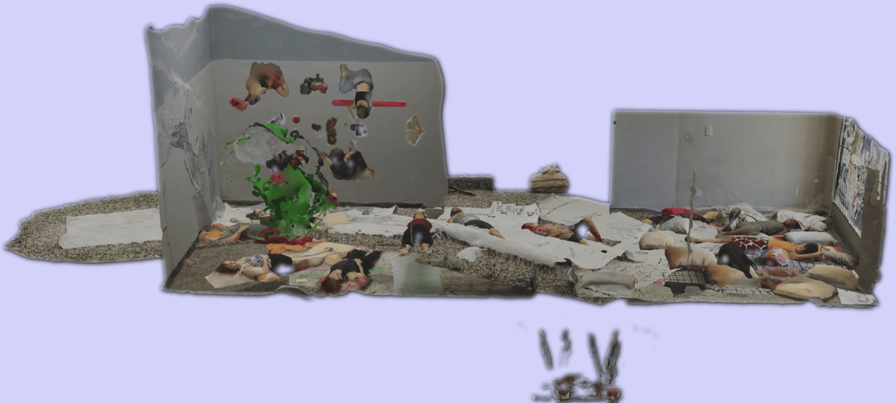

Here is a compilation of documentation for the initial Siestaria that took place in LAR (Local de Artes Recientes) in Buenos Aires, Argentina where we were hosted by Belén Coluccio and Lucas Martinelli. A group of approximately 15 people were invited to participate. To kick off our initial trial, we opted to invite individuals we were already acquainted with and who we believed would be interested in taking part. We considered it important to follow this approach because some members of the group already knew each other, which created a sense of support and trust.
During the sessions, we made a series of photogrammetries, also known as 3D scans, as a method of documentation complementary to traditional audio-visual media as a way of linking the following editions of Siestaria into a virtual map.

The psychologist and somatic practitioner Rosi Flaiban was invited to lead the warm-up sessions, while cinematographer and photographer Vareila Mairanga was tasked with capturing the event through video and photography. Image and sound designer Tatiana Cuoco skilfully managed the 3D scanning and editing of the audiovisual documentation. These three individuals were vital members of our team; they actively participated in the Siestaria process by engaging in dream work and various exercises.
The activities took place over two afternoons on the weekend to make attendance more convenient for the participants. Each meeting lasted roughly two and a half hours. We spaced the meetings out over two days, with a night in between, to allow time to reflect on what had been accomplished and to consider the many proposals we had to offer.
Team
Concept & facilitation — Tatiana Heuman & Florencia Curci
Foto and Video documentation — Vareila
Video edition & 3D modelling — Tatiana Cuoco
Movement practices — Rosi Flaiban
Location & hosting — LAR (Belén Coluccio and Lucas Martinelli)
Research assistance — Ján Solčáni
Produced with support from the Academy of Media Arts Cologne